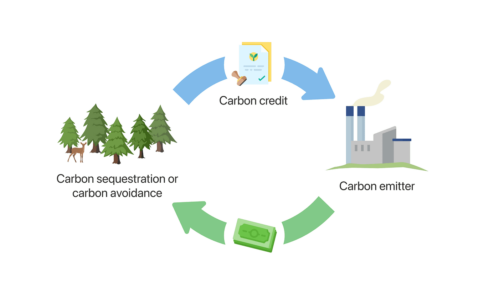

Introduction
Imagine for a moment that you have two bank accounts. In one account there is money. In the other account there is a Personal Carbon Allowance (PCA) representing the amount of Co2 you are allowed to release into the atmosphere each year. When you book a plane ticket to your favorite destination you pay for your ticket with money, but in addition you will have to pay in kg of carbon emitted into the atmosphere during your flight. Flying from Oslo to London will set you back, 1200NOK and 241kg of Co2 (an Iphone will cost you approx. 70 kg of Co2).
This scheme places the responsibility of pollution in the hands of the consumer and, in addition to existing emission quotas on a national level, could help reach the goal of achieving the UN sustainable development goals.
If you live an environmentally friendly lifestyle, or simply do not have the money to do otherwise, you can sell your unspent allowance on the open market (trade Kg of Co2 for money). The PCA scheme will limit your personal freedom to travel, shop and consume. Your allowance, distributed by the government once a year, will decrease slowly over time in accordance with the national quota, but PCA could lead to a redistribution of wealth and make emissions more visible to the consumer.
The Case
The PCA is one of many radical solutions proposed to fighting climate change. In this case you will discuss how this scheme is related to the UN sustainability goals and potential technological solutions.
Key terms
- Carbon Footprint: The total amount of greenhouse gases, primarily carbon dioxide, emitted directly or indirectly by an individual, organization, event, or product
- Climate Mitigation: Actions and strategies designed to reduce or prevent the emission of greenhouse gases, mitigating the impact of climate change.
- Consumer Behavior: The choices and actions of individuals and households regarding what products they buy, how they use them, and their impact on the environment
- Emission Quotas: The predefined amount of greenhouse gases a country or region is permitted to emit, usually established by international agreements to combat climate change.
Relevant UN goals to the PCA scheme
- 10: Reduced Inequalities
- 12: Responsible Consumption and Production
- 13: Climate Action
These SDGs are the most relevant to the PCA scheme because they directly address climate change, encourages responsible consumption, and holds the potential to impact economic and social inequalities. Balancing these objectives will be crucial to ensure the scheme's effectiveness without hindering economic development or disproportionately burdening marginalized populations.
Our immidiete reactions to the PCA
Our immediate reaction to the PCA scheme is a mix of both support and concern. On one hand, it's a powerful concept that places environmental responsibility directly in the hands of consumers, encouraging more conscious choices. It aligns with the urgent need to address climate change and meet the UN sustainable development goals. However, we are also concerned about its potential impact on personal freedom and accessibility, especially for lower-income individuals. The idea of slowly decreasing allowances over time seems reasonable, but the challenge lies in finding a balance that doesn't disproportionately burden vulnerable groups and maintains economic growth.
Potential soulutions to implemention the PCA
Implement advanced sensors and machine learning algorithms to measure everyone’s individual carbon emissions.
Carbon credit wallet apps, so that people can keep track of their own carbon emissions and potentially buy and sell carbon allowance. Making it easier for people to trade their left-over carbon emissions to the open market.
Smart appliances which will help households to optimize their energy consumption and help them stay within their carbon allowance.
Potential barriers to impplementing the PCA
Maintaining the privacy of people while monitoring everything they do can become a challenge.
Accurate reading of individuals carbon emissions from the different sources. Inaccurate readings would undermine the effect of the scheme.
Building and maintaining a secure and user-friendly trading platform which could handle a very high volume of transactions of the entire world, should be considered as a substantial technological barrier.
Our toughths on implemention of the PCA
We believe that introducing the PCA is a good step towards saving the planet. The generation that is currently living is having to deal with the climate issues that were not created by them by giving up some of the privileges that the previous generation created for them, with the cost of climate change. A person’s freedom seems like a large price to pay for something they didn’t do, but saving the planet for the future generations might be in everyone’s best interest rather than having an expensive vacation every year. We would love to see the introduction and development of PCA. It would also help the poor if they are able to sell their PCA and provide even more equality and globalization.
The potential consequences of the PCA
The first and the most obvious potential consequence of the PCA is the restriction of individual freedom. Individuals will have to change their lifestyles and make decisions based on the PCA. That could be upsetting to many because everyone values their freedom.
The political aspect would be the government having a say in everything regarding the PCA and directly influencing individual freedom as well. If the government can enforce rules on PCA, it could be a threat to civil liberty and cause problems in society. PCA could, just like everything else, be misused. It could be sold illegally, hacked, or unequally distributed. The system could impact industries, jobs, and consumer behavior, with potential economic disruptions. However, it may also lead to the development of green technologies and industries, creating new economic opportunities. It also imposes a huge concern on the privacy of all individuals if everything they do is being tracked and stored as data somewhere, where someone has access to it. It is hard to tell if the concerns outweigh the positives before something like this is implemented in a small test group and closely studied.
Sources
Nations, U. (n.d.). Causes and Effects of Climate Change. United Nations. Retrieved October 18, 2023, from
https://www.un.org/en/climatechange/science/causes-effects-climate-change
Team, F. (2021, February 16). Should We Blame A Specific Generation for Climate Change? Flightnook. https://www.flightnook.com/should-we-blame-a-specific-generation-for-climate-change
The World Bank. (2019). What is Carbon Pricing? | Carbon Pricing Dashboard. Worldbank.org. https://carbonpricingdashboard.worldbank.org/what-carbon-pricing